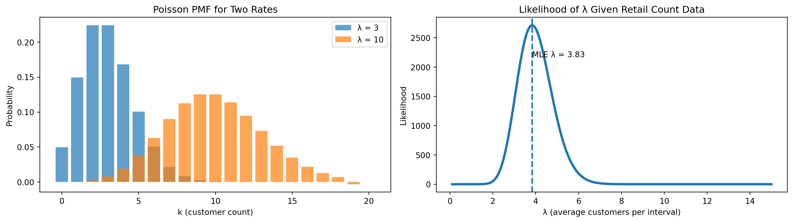
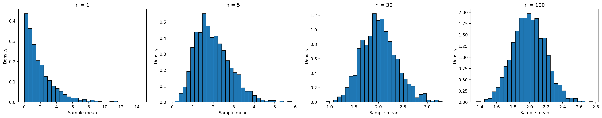

Discrete Distributions
Probabilistic Distributions
Karen Hovhannisyan
2026-02-05
Topics
- Discrete Distributions
- Poisson Distribution
- Bernuli Distribution
- Central Limit Theorem | CLT
The Properties of Discrete Distributions
When do we have a Discrete Distributions?
A distribution is discrete if:
- The random variable takes countable values
- Probabilities are assigned to exact outcomes
- The total probability is obtained by summing, not integrating
Examples of Discrete Outcomes
- Number of purchases made today
- Number of customers who churned this month
- Number of defects in a production batch
- Whether a user clicked an ad (yes / no)
Discrete Random Variables
A discrete random variable is a numerical description of a countable outcome.
Typical forms:
- Binary outcomes: \(X \in \{0,1\}\)
- Counts: \(X = 0,1,2,3,\dots\)
Examples:
- \(X = 1\) if a customer churns, \(0\) otherwise
- \(X\) = number of purchases per user
- \(X\) = number of support tickets per day
Probability Mass Function
Discrete distributions are described by a Probability Mass Function (PMF).
The PMF answers the question:
What is the probability that the random variable equals a specific value?
Mathematically:
\[ P(X = x) \]
Core Properties of a PMF
\[ \sum_x P(X = x) = 1 \]
- \(0 \le P(X = x) \le 1\)
- Probabilities are assigned to exact values
- The total probability sums to 1:
- Հավանականության խտության ֆունկից ա;
- Հավանականության զանգվածի ֆունկցիա
Poisson Distribution
Poisson models turn randomness into operational clarity.
How many times does an event occur within a fixed time (or space) interval?
Imagine
Imagine a retail store observing customer foot traffic.
Every 10 minutes, a random number of customers enter the store.
Over many days, management notices:
- Some intervals have 1–2 customers
- Some have 5–6 customers
- Occasionally, none
Yet the average stays roughly the same.
Probability Mass Function
\[ P(X = x) = \frac{\lambda^x e^{-\lambda}}{x!}, \quad x = 0,1,2,\dots \]
This formula gives the probability of seeing exactly \(x\) events
Expected Value and Variance
\[ E[X] = \lambda \]
\[ Var(X) = \lambda \]
- The average number of events equals \(\lambda\)
- The uncertainty (variance) grows at the same rate
- Large \(\lambda\) → frequent events
- Small \(\lambda\) → rare events
- \(\lambda = 2\) → about 2 calls per hour
- \(\lambda = 15\) → about 15 website visits per minute
- \(\lambda = 0.2\) → a rare failure, once every 5 intervals
Business Applications of Poisson Distribution
Poisson models are widely used in practice for:
- customer arrivals and foot traffic
- call center volume estimation
- website click and impression counts
- manufacturing defects
- incident and outage reporting
Poisson Process
- Exponential distribution models time between events
- Poisson distribution models number of events
They describe the same process from different perspectives.
Visualization
- Left plot → PMF for \(\lambda = 3\) and \(\lambda = 10\)
- Right plot → likelihood as a function of \(\lambda\)
Bernoulli Distribution
The Bernoulli Distribution models the most fundamental probabilistic question in data analytics and business decision-making:
Two Possible Outcomes
Did an event happen or not?
A Bernoulli random variable has only two possible outcomes:
- success
- failure
These outcomes can be represented in multiple equivalent ways depending on context:
- yes / no
- 1 / 0
- click / no click
- purchase / no purchase
- tail / head (ղուշ / գիր)
Mathematical Definition
A random variable \(X\) follows a Bernoulli distribution if:
\[ X \sim \text{Bernoulli}(p) \]
where:
- \(p \in [0,1]\) is the probability of success
What Is a Bernoulli Trial
A Bernoulli trial is a single experiment with:
- exactly one attempt
- exactly two possible outcomes
- a fixed probability of success
Each trial is assumed to be independent.
Examples of Bernoulli Trials
Common real-world Bernoulli trials include:
- Did a user click an advertisement?
- Did a customer complete a purchase?
- Did a transaction fail?
- Did a device respond to a health check?
Each produces a binary outcome.
Real-World Narrative
Consider an online store tracking customer conversions.
For each user session:
- Purchase →
1
- No purchase →
0
Across thousands of sessions:
- Some users convert
- Most users do not
Each session is evaluated independently, with the same underlying probability of conversion.
Business Use Cases
Typical Bernoulli use cases in analytics:
- ad click behavior
- conversion events
- email engagement
- fraud detection flags
- churn indicators
Bernoulli is the building block for many advanced models.
Probability Mass Function (PMF)
Because Bernoulli is a discrete distribution, it is described by a Probability Mass Function (PMF):
\[ P(X = x) = p^x (1-p)^{1-x}, \quad x \in \{0,1\} \]
PMF Interpretation
This formula yields exactly two probabilities:
- \(P(X = 1) = p\)
- \(P(X = 0) = 1 - p\)
Expected Value and Variance
For a Bernoulli random variable:
\[ E[X] = p \]
\[ Var(X) = p(1-p) \]
Interpretation of Moments
- Expected value equals the probability of success
- Variance is largest at \(p = 0.5\)
- Variance shrinks as outcomes become more certain
- Large \(p\) → success likely
- Small \(p\) → success rare
Concrete Examples
- \(p = 0.02\) → 2% conversion rate
- \(p = 0.35\) → 35% email open rate
- \(p = 0.90\) → highly reliable system
Business Context
An e-commerce company records whether each visitor completes a purchase.
Each session is encoded as:
1→ purchase
0→ no purchase
Observed Data
{.smaller}
| Session | Purchase |
|---|---|
| 1 | 0 |
| 2 | 1 |
| 3 | 0 |
| 4 | 0 |
| 5 | 1 |
| 6 | 0 |
| 7 | 1 |
| 8 | 0 |
| 9 | 0 |
| 10 | 1 |
Summary Statistics
Let \(X\) be the purchase indicator per session.
- Number of sessions: \(n = 10\)
- Total purchases: \(S = 4\)
Sample mean:
\[ \bar{x} = \frac{4}{10} = 0.4 \]
Estimated probability:
\[ \hat{p} = 0.4 \]
Defining the Random Variable
\[ X = \begin{cases} 1 & \text{if a purchase occurs} \\ 0 & \text{otherwise} \end{cases} \]
A Bernoulli model is an appropriate first representation of this process.
So Far …
Final Intuition Summary
- Use Uniform for “random within limits.”
- Use Exponential for “time until next event.”
- Use Poisson for “number of events per interval.”
- Use Bernoulli for “one yes/no outcome”.
CLT
“Even if you’re not normal, the average is normal”
The Magic of the Normal Distribution
The Normal distribution appears everywhere in data.
What the Central Limit Theorem Says
The Central Limit Theorem states:
- When we take the mean of many independent random variables
- regardless of the shape of the original distribution
- provided they have finite mean and variance
- the distribution of the sample mean becomes approximately Normal as the sample size grows
in other words…

.
Intuition Behind the CLT
- Real-world data often come from skewed or irregular distributions.
- But when we average many small effects, the result tends toward a bell shape.
- This “averaging effect” is why the Normal distribution is so common.
Why This Matters in Analytics
The CLT allows us to:
- build confidence intervals
- perform hypothesis tests
- use Normal-based statistical tools
- approximate distributions of sums and averages
Even when the original data are not Normal.
Non-Normal Data Example
Think about:
- waiting times (often skewed)
- revenue per customer (heavy-tailed)
- customer arrival counts (discrete)
Individually, these can be far from Normal.
When we repeatedly take many samples and compute means:
- the distribution of the means becomes more symmetric
- it approaches the characteristic bell curve
- this happens regardless of the original shape
Simulation: Visualizing CLT

What the Simulation Shows
- For small n, the distribution of sample means is skewed.
- As n increases:
- the distribution becomes more symmetric
- it approaches a bell shape
- even though the original data were not Normal
Conditions for CLT
Before applying CLT:
- samples should be independent
- sample size should be sufficiently large
- underlying distribution must have finite variance
These ensure the sample mean behaves approximately Normal.
Practical Rules of Thumb (heuristics in analytics)
- If original data are nearly Normal → small n is ok
- If data are skewed → larger n is needed
- n ≥ 30 often yields good Normal approximation
Applying CLT in Practice
- confidence interval construction
- hypothesis testing
- A/B testing rules
- regression inference
These methods assume approximate Normality of averages.
“Even if you’re not normal, the average is normal.”